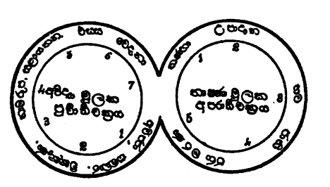

මූල දෙක
මේ සංසාර චක්රයෙහි පූර්වාර්ධය අපරාර්ධය යි කොටස් දෙකකි. අවිජ්ජා - සංඛාර - විඤ්ඤාණ - නාමරූප - සළායතන - ඵස්ස - වේදනා යන මේ ධර්ම සමූහය පූර්වාර්ධය යි. තණ්හා - උපාදන භව - ජාති ජරාමරණය මේ ධර්ම සමූහය අපරාර්ධය යි. පූර්වාර්ධය පටන් ගැනෙනුයේ අවිද්යාවෙනි. අපරාර්ධය පටන් ගැනෙනුයේ තෘෂ්ණාවෙනි. එබැවින් අවිද්යා තෘෂ්ණා දෙක මෙහි මූල ධර්මයෝ ය. මූල යයි කියනුයේ ඒ ඒ අර්ධයේ ඉතිරි ධර්ම ඒ දෙක නිසා ඇති වන බැවිනි. ඒ දෙක නිසා ඇති වේය යි කියනුයේ ඒ දෙක නැසූ කල්හි ඉතිරි ඒවා පහළ නො වන බැවිනි. මූල ධර්ම දෙක නැසීමෙන් මිස අන් ක්රමයකින් ඒ ධර්ම නො නැසිය හැකි ය.
මේ සංසාර චක්රය දිග ලණුවක් නැවත නැවත දරණ ගසා තැනූ වළල්ලක් හෙවත් චක්රයක් වැනි ය. බොහෝ පටවල් ඇත්තා වූ ඒ වළල්ල එක් වළල්ල කැයි ද ගත හැකි ය. බොහෝ පටවල් නිසා වළලු බොහෝ ගණනකැයි ද ගත හැකි ය. එමෙන් බොහෝ ධර්මයන් ඇත්තා වූ පඹ වළල්ලක් මෙන් අවුල් වූ මේ සංසාර චක්රය එක චක්රයක් සැටියට ද කිය හැකි ය. චක්ර බොහෝ ගණනක් සැටියට ද කිය හැකිය. හේතුඵල චක්රය, කර්මවිපාක චක්රය, ක්ලේශ කර්ම විපාක චක්රය යන මේවා කියන ලදුයේ එහෙයිනි. අවිද්යාව නිසා සංස්කාරයෝ ද, සංස්කාරයන් නිසා විඥානය ද, ඉක්බිති නාමරූප ෂඩායතන ස්පර්ශ වේදනාවෝ ද, උපදිති. වේදනාව නිසා නැවත පටන් ගත් ධර්මය වූ අවිද්යාව ම ඇතිවන බැවින් පූර්වාර්ධය ද එක් භව චක්රයකි. තෘෂ්ණාව නිසා උපාදානය ද, උපාදානය නිසා භවය ද, භවය නිසා ජාතිය ද, ජාතිය නිසා ජරාමරණය ද වී නැවත මූල ධර්මය වූ තෘෂ්ණාව ම ඇතිවන බැවින් අපරාර්ධය ද එක් චක්රයක් වේ.

මෙසේ චක්ර දෙකක් වෙතත් මේ දෙක පුද්ගලයන් දෙදෙනකු පිළිබඳ චක්ර දෙක්ක නො වේ. මේ චක්ර දෙක ම පවත්නේ සෑම කල්හි ම එකටම ය. තෘෂ්ණාව ඇතිවීමේ ප්රධාන හේතුව වේදනාව ය. වේදනාව වැනි තවත් ආහාරයක් තෘෂ්ණාවට නැත. එබැවින් “වේදනා පච්චයා තණ්හා” යි වේදනා ප්රත්යයෙන් තෘෂ්ණාව වන බව වදාළ සේක. තෘෂ්ණාව අවිද්යාවෙන් තොරව කිසි කලෙක ඇතිවන්නක් නො වේ. තෘෂ්ණාව උපදිතොත් සැමකල්හි එය සමග අවිද්යා ද උපදනේය. එතැන දී අවිද්යාව සංස්කාරයන්ට හේතු වීමෙන් සංස්කාර නිසා විඥානාදිය වීමෙන් පූර්වාර්ධ චක්රය වේ. තෘෂ්ණාව උපාදානයන්ට හේතු වීමෙන් අපරාර්ධ චක්රය වේ. මෙය තේරුම් ගැනීම අපහසු අවුල් තැනකි. නැවත නැවත සිතා බලා කාරණය තේරුම් ගනිත්වා.
“තත්ථ පුරිමං දිට්ඨිචරිතවසේන වුත්තං. පච්ඡිමං තණ්හාචරිතවසේන” යනුවෙන් මේ චක්ර දෙකින් පූර්ව වූ අවිද්යා මූලික චක්රය දෘෂ්ටිචරිතයා ගේ වශයෙන් ද තෘෂ්ණා මූලික පශ්චිම චක්රය, තෘෂ්ණා චරිතයා ගේ වශයෙන් ද දේශනය කරන ලදැ යි අටුවාවෙහි කීහ. එයට හේතු වශයෙන් දෘෂ්ටිචරිතයා ගේ සංසාර ප්රවෘත්තිය කරන ධර්මය අවිද්යාව බවත් තෘෂ්ණා චරිතයා ගේ සංසාරය පවත්වන ධර්මය තෘෂ්ණාව බවත් දැක්විණ.
තවද :- “උච්ඡේදදිට්ඨිසමුග්ඝාතාය වා පඨමං, ඵලූප්පත්තියා හේතූනං අනුපච්ඡේදප්පකාසනතෝ, සස්සත දිට්ඨිසමුග්ඝාතාය වා දුතියං, උප්පන්නානං ජරා මරණප්පකාසනතෝ” යි ඵලය ඉපදීමෙහි හේතූන් ගේ නො සිඳ පැවැත්ම දක්වන බැවින් පළමුවන චක්රය උච්ඡේද දෘෂ්ටිය දුරුකිරීම පිණිස වදාළහ යි ද, උපන් ධර්මයන්ගේ ජරාමරණය ප්රකාශ කරන හෙයින් දෙවන චක්රය ශාශ්වතදෘෂ්ටිය නැසීම පිණිස වදාළහ යි ද දැක්විණි.
තවද:- “ගබ්භසෙය්යකවසේන පුරිමං. අනුපුබ්බප්පවත්ති දීපනතො, ඕපපාතිකවසේන පච්ඡිමං, සහුප්පත්ති දීපනතො” යි පිළිවෙලින් පැවැත්ම දක්වන බැවින් පූර්ව චක්රය මවුකුස උපදනා සත්ත්වයන්ගේ වශයෙන් ද, එකවර පහළවීම දක්වන බැවින් දෙවැන්න ඕපපාතික සත්ත්වයන් ගේ වශයෙන් ද වදාළහ යි දැක්විණ.
“සච්චප්පභවතෝ කිච්චා වාරණා උපමාහි ච,
ගම්භීර නය භේදා ව විඤ්ඤාතබ්බං යථාරහං”
යනුවෙන් දැක්වෙන පරිදි මේ භව චක්රය ඒ ඒ අංගය ඇති කරන්නා වූ සත්යයන් ගේ වශයෙන් ද, කෘත්ය වශයෙන් ද, දෘෂ්ටිනිවාරණයා ගේ වශයෙන් ද, උපමා වශයෙන් ද, ගම්භීර භාවයා ගේ වශයෙන් ද, නය ප්රභේද වශයෙන් ද දත යුතු ය.
“තණ්හා ච අවසේසා ච කිලේසා අවසේසා ච අකුසලා ධම්මා තිණී ච කුසලමූලානි සාසවානි අවසේසවා ච සාසවා කුසලා ධම්මා අයං වුච්චති දුක්ඛසමුදයෝ” යනුවෙන් තෘෂ්ණාව ද, අවශේෂ ක්ලේශයෝ ද, අවශේෂාකුශල ධර්මයෝ ද, සාශ්රව කුශල මූලයෝ තිදෙන ද, අවශේෂාශ්රව කුශල ධර්මයෝ ද යන මෙය දුඃඛසමුදය සත්යය යි විභංග පාළියෙහි වදාළ ක්රමයෙන් මේ භව චක්රයට අයත් ධර්මයන්ගෙන් කර්ම පක්ෂයට හා ක්ලේශ පක්ෂයට අයත් අංගයෝ සමුදය සත්යයට අයත් වන්නාහ. ඉතිරි ධර්මයෝ දුඃඛ සත්යයට අයත් වන්නාහ.
ද්වාදශාංගයන් අතුරෙන් අවිද්යාව ක්ලේශයක් හෙයින් කියන ලද ක්රමයේ සැටියට සමුදය සත්යයට අයත් ය. අවිද්යා හේතුවෙන් හටගන්නා වූ සංස්කාරය ද, සමුදය සත්යයට ම අයත් ය. එබැවින් සංස්කාරය අවිද්යා සංඛ්යාත සමුදය සත්යයෙන් පටන් ගැනෙන්නා වූ ගළා එන්නා වූ සමුදය සත්යයකි. විඥානය සංස්කාර සංඛ්යාත සමුදය සත්යයෙන් ගළා එන්නා වූ දුඃඛසත්යය යි. ෂඩායතනය නාම රූප සංඛ්යාත දුඃඛසත්යයෙන් එන්නා වූ දුක්ඛ සත්යය යි. ස්පර්ශය ෂඩායතන සංඛ්යාත දුඃඛ සත්යයෙන් එන්නා වූ දුඃඛසත්යය යි. වේදනාව ස්පර්ශ සංඛ්යාත දුඃඛසත්යයෙන් එන්නා වූ දුක්ඛසත්යය යි. තෘෂ්ණාව වේදනා සංඛ්යාත දුඃඛසත්යයෙන් එන්නා වූ සමුදය සත්යය යි. උපාදානය තෘෂ්ණා සංඛ්යාත සමුදය සත්යයෙන් එන්නා වූ සමුදය සත්යය යි. භවය උපාදාන සංඛ්යාත සමුදය සත්යයෙන් එන්නා වූ සමුදය දුඃඛ සත්යය දෙක ය. ජාතිය කර්මභව සංඛ්යාත සමුදය සත්යයෙන් එන්නා වූ දුඃඛසත්යය යි. ජරා මරණය ජාති සංඛ්යාත දුඃඛසත්යයෙන් එන්නා වූ දුඃඛසත්යය යි. මෙසේ මේ භවචක්රය සත්ය වශයෙන් දත යුතු ය. පහසුවෙන් තේරුම් ගැනීමට මෙම සටහන බලනු.
- අවිජ්ජා සමුදය සච්ච
- සංඛාර සමුදය සච්ච
- විඤ්ඤාණ දුක්ඛ සච්ච
- නාමරූප දුක්ඛ සච්ච
- සළායතන දුක්ඛ සච්ච
- ඵස්ස දුක්ඛ සච්ච
- වේදනා දුක්ඛ සච්ච
- තණ්හා සමුදය සච්ච
- උපාදාන සමුදය සච්ච
- භව සමුදය, දුක්ඛ සච්ච
- ජාති දුක්ඛ සච්ච
- ජරාමරණ දුක්ඛ සච්ච
අවිද්යාදීන් ගේ කෘත්යයෝ මෙසේ දත යුතු. රූපාදි ආරම්මණ විෂයෙහි සත්ත්වයන් මුළා කරවීම හා සංස්කාරයන් පහළ කරවීම අවිද්යාව ගේ කෘත්ය යි. කුසලාකුසල ක්රියා සිදුකිරීම හා විපාක විඥානයන් පහළ කරවීම සංස්කාරයන් ගේ කෘත්යයයි. රූපාදිය දැන ගැනීම හා නාමරූප පහළ කරවීම විඥානයා ගේ කෘත්යය යි. ඔවුනොවුන්ට උපකාරීවීම හා ෂඩායතනය පහළ කරවීම නාමරූපයා ගේ කෘත්යය යි. රූපාදි අරමුණු පිළිගැනීම හා ස්පර්ශය ඇති කිරීම ෂඩායතනයා ගේ කෘත්යය යි. අරමුණු ස්පර්ශ කිරීම හා වේදනාව පහළ කරවීම ස්පර්ශයා ගේ කෘත්යය යි. ආරම්මණ රසය විඳීම හා තෘෂ්ණාව ඇති කරවීම වේදනාව ගේ කෘත්යය යි. ඇලුම් කළ යුත්තෙහි ඇලීම හා උපාදානය පහළ කරවීම තෘෂ්ණාව ගේ කෘත්යය යි. ආත්මාදි වශයෙන් තදින් ගැනීම හා භවය පහළ කරවීම උපාදානයා ගේ කෘත්යය යි. නානා ගතීන්ට පැමිණවීම හා ජාතියට ප්රත්යවීම භවයා ගේ කෘත්යය යි. ස්කන්ධයන් පහළ කරවීම හා ජරා මරණයට ප්රත්යයවීම ජාතිය ගේ කෘත්යය යි. ස්කන්ධයන් ගේ දිරීම් බිඳීම් දෙක සිදුකිරීම හා ශෝකාදියට ස්ථාන වී භවාන්තරයන් ඇති කිරීම ජරාමරණයා ගේ කෘත්යය යි.
මෙසේ කෘත්යයන් ගේ වශයෙන් ද අවිද්යාදීහු දත යුත්තාහු ය. හුදෙක් ආත්ම නො වන්නා වූ සත්ත්ව පුද්ගල නො වන්නා වූ ශුද්ධ වූ ධර්මයන් නිසා තවත් ධර්මයන් ඇතිවීමෙන් මෙ සංසාර චක්රය පවත්නේ ය. මෙහි ඒ ඒ ක්රියා සිදු කරන්නා වූ සැපදුක් විඳවන්නා වූ අධිපතියෙක් ද නැත. කරන්නා වූ විඳින්නා වූ අන් කෙනෙක් ද නැත.
1. ඒවං සමුප්පන්නමිදං සහේතුකං
දුක්ඛං අනිච්චං චලමිත්තරද්ධුවං
ධම්මේහි ධම්මා පහවන්ති හේතුසෝ
නහෙත්ථ අත්තා ච පරො ච විජ්ජති.
-
2. ධම්මා ධම්මේ සඤ්ජනෙන්ති හේතුසම්භාර පච්චයා
හේතූනඤ්ච නිරෝධාය ධම්මෝ බුද්ධේන දේසිතෝ
හේතූසු උපරුද්ධෙසු ඡින්නං වට්ටං න වට්ටති.
-
3. ඒවං දුක්ඛංන්තකිරියාය බ්රහ්මචරියිධ විජ්ජති,
සත්තේ ච නූපලබ්භන්තේ නෙවුච්ඡේදෝ න සස්සතං
(විභංගට්ඨ කථා)
තේරුම:-
- මෙසේ හටගන්නා වූ මේ භව චක්රය හේතූන් නිසා පවත්නේ ය. මෙම භව චක්රය දුකය, අනිත්ය ය, සෙලවෙන සුලුය, වෙනස්වන සුලුය, අස්ථිරය, හේතු වූ ධර්මයන් නිසා ධර්මයෝ ම පහළ වන්නා හ. මෙහි තෙමේ ය කියා හෝ අනෙකෙක්ය කියා හෝ කිසිවෙක් නැත්තේ ය.
- (එකිනෙකට හේතුවීමෙන්) ධර්මයෝ ම ධර්මයන් උපදවති. හේතූන් ගේ නිරෝධය පිණිස බුදුන් වහන්සේ විසින් ධර්මය දේශනා කරන ලද්දේ ය. හේතූන් නිරුද්ධ කල්හි ලෝකෝත්තර මාර්ගඥානයෙන් සිඳින ලද සංසාර වෘත්තය මතු නො පවතී.
- මෙසේ දුක් කෙළවර කිරීම පිණිස මේ සස්නෙහි බ්රහ්මචර්ය්යය ඇත්තේ ය. සත්ත්වයකු නො ලැබෙන කල්හි මුල පටන් ම නැත්තා වූ සත්ත්වයා ගේ මරණයෙන් සිඳීමෙක් හෝ ජාතියෙන් ජාතියට යෙමින් නො නැසී විසීමෙක් හෝ කොයින් ද?